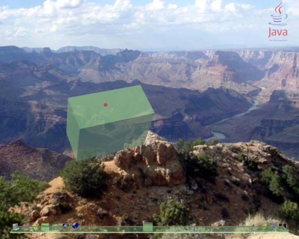

This tutorial is based upon the tutorial written by Hideya Kawahara.
| Aim: | To demonstrate simple manipulations and user interaction with a 3D application within the lg3d framework. |
|---|---|
| Requirements: | This tutorial builds upon Tutorial 1. To use this tutorial you will need a functional installation of the of lg3D. The stable version is the best version to begin with. This version is located at the lg3d-core web site. Follow the "Getting started with Project Looking Glass" link for lg3d installation instructions. Note: You do not need to run the lg3d-session version. |
| Additionally, you need to have the Java 1.5 SDK. This is available at the Sun Java web site. | |
| Steps: | |
| Step 1: | Initialize the 3D application |
| Follow steps 1 - 3 in Tutorial 1 to initialize the application, creating a box. As a slight variation to that try making the box translucent by changing the alpha value in the SimpleAppearance constructor. | |
Frame3D frame3d = new Frame3D();
|
|
| Step 2: | Rotate the box |
| To prove that this is a box, we can rotate it and see its 3D nature. Component3D provides utility methods to achieve this. First, we specify the axis around which we rotate the component, using setRotationAxis. |
|
comp.setRotationAxis(1.0f, 0.5f, 0.0f); |
|
| This specifies the rotation to be around the line running through the X axis at 1, and the Y axis at 0.5. Now we can set the angle to of rotation, using setRotationAngle. The API uses radians, but degrees are more commonly used, so we use Math.toRadians()to simplify the process. |
|
comp.setRotationAngle((float)Math.toRadians(60)); |
|
| Please note that this shows reasonable lighting on each surface. It is the SceneManager's responsibility to lighten the world in a reasonable manner. If you want to it would be possible to write a SceneManager that changes lighting depending on the time of day, or the workload of your machine. | |
| Step 3: | Add some visual feedback |
|
As is commonly seen in desktops, and other applications,
some sort of visual feedback is usually provided to indicate
that an action can take place on any given object. Commonly
a button will change its appearance when the mouse moves over it
to indicate that it can be pressed. The Project Looking Glass API
provides the basic building blocks to implement visual user feedback. Two key concepts of this API are the "event adapter" and the "action". An event adapter is a listener that listens to specific events and converts it into a form that can invoke an "action" via the Action interface. An action is a class that implements at least one sub-interface of the Action interface. It accepts converted events and performs predefined actions accordingly. This example uses a MouseEnteredEventAdapter that listens to mouse enter and exit events, and invokes performAction(boolean) method (which is declared in ActionBoolean) to propagate the stimulus. ScaleActionBoolean in turn implements the ActionBoolean interface and the performAction(boolean) method, which is used to receive the stimulus. It scales the specified component by the factor of its float argument (1.2f). |
|
comp.addListener(new MouseEnteredEventAdapter(new ScaleActionBoolean(comp, 1.2f))); |
|
|
Each component can change the visual representation with some
transition animation. The default transition animation is
the simplest transition, which changes the visual representation
instantly. So, the above scale change will happen suddenly when mouse
is moved over the component. In order to make a better visual effect, you can specify a transition animation. LG3D provides a few predefined animations. Here we specify NaturalMotionAnimation which implements very natural transition effects. In order to do so, you need to instantiate a NaturalMotionAnimation object and set it to the component by calling the setAnimation method. The constructor takes the default duration for transition of all the animation as the argument. Here we set it to 500. The unit is milliseconds. |
|
comp.setAnimation(new NaturalMotionAnimation(500));
|
|
|
When registering an event listener like MouseEnteredEventAdapter,
you may want to do one more thing.
Registrating the above mouse event adapter results in consuming
the mouse event at the 'comp' component. This prevents the
SceneManager from performing the default actions like allowing
the user to drag and move this application. By setting the mouse event propagation flag to true, we can avoid consumption of mouse events and let the SceneManager perform the default action. |
|
comp.setMouseEventPropagatable(true);
|
|
|
If you comment out the above line, you won't be able to move the
object. Here is a bit more detailed explanation on what's going on. The default SceneManager action is activated by mouse events propagated to the Scene Manager. The SceneManager resides somewhere upper in the scene graph. A mouse event propagates upward following the scene graph path from the event source component to the scene graph root. If a mouse event is not consumed by the application, it eventually reaches the SceneManager, which results in the default action. If you set a listener to a component, however, mouse events posted against the component will be consumed and won't be propagated to the SceneManager (thus, no default action will be taken place). By setting the propagation flag true, we are allowing mouse events to be propagated upwards at the same time sent to the listeners listening to the event. This allows the SceneManager to take the default action. |
|
| Step 4: | Create and set the application's cursor |
|
As you may remember, in Tutorial1, the mouse cursor changed
automatically to the move curosr when the mouse is over the
application. This is done by the SceneManager as the default
action. Instead, you can specify your own mouse cursor.
Here let's create a simple cursor which is a translucent red
sphere and set it to the component. First create an appearance of translucent red and a sphere with that appearance. Note that you need to specify GENERATE_NORMALS when you create the sphere in order to get it displayed with shadow. Also, the first parameter to Sphere's constructor is specifying the radius (not the diameter). |
|
SimpleAppearance cursorApp
= new SimpleAppearance(1.0f, 0.0f, 0.0f, 0.5f);Sphere cursorBody
= new Sphere(0.002f, Sphere.GENERATE_NORMALS, 12, cursorApp); |
|
| Then create a cursor object, add the shape, set the size hint and finally set the cursor to the component. | |
Cursor3D cursor = new Cursor3D(); |
|
| Step 5: | Create and set the application's thumbnail |
|
In Tutorial1, the SceneManager also provided a default thumbnail
for the application. In this tutorial, let's create our own.
First, create a shape for it. Here we use the same translucent
pale green box. By convention, thumbnail's size is set to
close to the size of the applicaiton. It's SceneManager's
responsibility to scale it down to a reasonable size. |
|
SimpleAppearance thumbnailApp
= new SimpleAppearance(0.6f, 0.8f, 0.6f, 0.7f);Box thumbnailBody = new Box(0.04f, 0.03f, 0.02f, thumbnailApp); |
|
| Then create a thumbail object, add the shape, set the size hint and finally set it to this application. | |
Thumbnail thumbnail = new Thumbnail(); |
|
| Step 6: | Initialize the container |
| Finally, we can add the frame to the container and initialize it to make it visible, as described in Tutorial 1 step 4. Note, since the box has been rotated and scaled, a large hint size should be given to the SceneManager to avoid conflicts with other 3D apps. | |
frame3d.addChild(comp); |
|
| Step 7: | Compile the code |
|
We have finished writing the code. The full version includes the required import statements, and various constructor and main methods. Download Tutorial2.java Now we need to compile the source file. The tutorial requires the lg3d core library and Java 1.5 to compile. The core library can be found under the lib directory of the lg3d distribution (replace $LG3DHOME with the path to the lg3d distribution).
|
|
| javac -cp "$LG3DHOME/lib/ext/lg3d-core.jar" Tutorial2.java | |
| Step 8: | Run our application |
| To run the tutorial, simply execute the runtutorial script with the name of the class file (without the .class extension) | |
./runtutorial Tutorial2 |
|
|
The LG3D desktop should be displayed with a pale green box in the
center. When the mouse is moved over it the cursor should change
to the one you created (a round red cursor), and the box should
increase in size in half a second. Note that the application's
color also becomes less translucent when mouse is over it, but
doesn't become fully opaque since we specified a translucent
color to this application. Play around with your new application before moving on to the next tutorial which will cover greater interaction with the user, and a simple example of textures. | |
|  | |